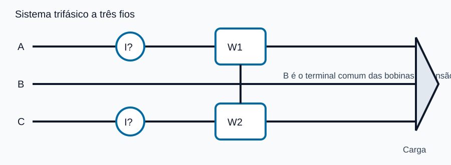
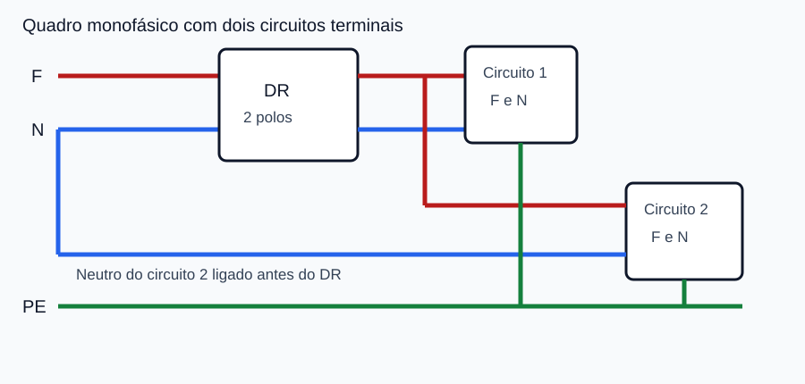
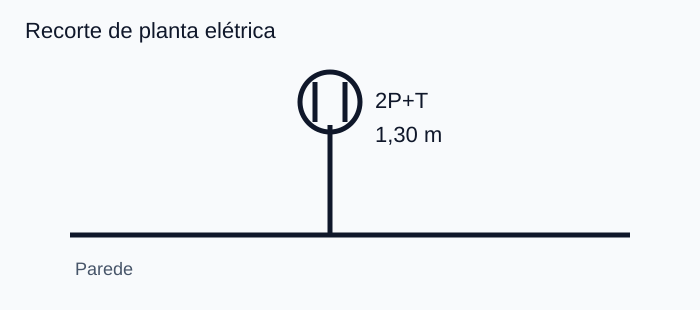

Nota de origem: questões inspiradas nas questões 26-39 e 43-45 da prova CAERN - Engenheiro Eletricista - Tipo B. Os textos, valores e diagramas foram adaptados para estudo; os gabaritos abaixo são técnicos e comentados, não uma transcrição do gabarito oficial.
| Questão Real 01 | Fasores • Forma retangular e polar |
Em uma carga trifásica equilibrada ligada em estrela, a tensão de fase é $V_{AN}=120\angle0^\circ\,\text{V}$ e a impedância de cada fase é $Z=24+j18\,\Omega$. Desprezando a impedância do neutro, a corrente $I_A$ é:
A) $4\angle36{,}87^\circ\,\text{A}$.
B) $5\angle-53{,}13^\circ\,\text{A}$.
C) $4\angle-36{,}87^\circ\,\text{A}$.
D) $3{,}33\angle-36{,}87^\circ\,\text{A}$.
Converta $Z$ para a forma polar: $|Z|=\sqrt{24^2+18^2}=30\,\Omega$ e $\theta=\tan^{-1}(18/24)=36{,}87^\circ$. Logo, $Z=30\angle36{,}87^\circ\,\Omega$ e $I_A=V_{AN}/Z=4\angle-36{,}87^\circ\,\text{A}$. Para voltar à forma retangular: $4(\cos-36{,}87^\circ+j\sin-36{,}87^\circ)=3{,}2-j2{,}4\,\text{A}$. Distratores: A troca o sinal do ângulo; B usa divisões separadas por $R$ e $X$; D divide apenas por $R+X$.
Como pensar: em divisão de fasores, divida os módulos e subtraia os ângulos. Em $a+jb$, use $|Z|=\sqrt{a^2+b^2}$ e observe o quadrante antes de calcular o ângulo.
| Questão Real 02 | Potência complexa • Sequência de fases |
Uma carga trifásica passiva, equilibrada e indutiva é alimentada inicialmente em sequência positiva. Mantidos os módulos das tensões e a mesma impedância por fase, a fonte é substituída por outra de sequência negativa. Considerando convenções fasoriais consistentes, a potência complexa total da carga:
A) passa de $P+jQ$ para $P-jQ$, pois a sequência altera a natureza da carga.
B) permanece $P+jQ$, pois a impedância e os módulos eficazes não mudaram.
C) torna-se $-P+jQ$, pois a ordem de fases inverte o fluxo da potência ativa.
D) torna-se puramente ativa, pois as reativas das três fases se anulam.
Por fase, $S_f=V_fI_f^*=|V_f|^2/Z^*$. Como o módulo da tensão e a impedância permanecem iguais, $S_T=3S_f=P+jQ$ também permanece. A sequência modifica a ordem angular das fases, não transforma uma impedância indutiva em capacitiva. Os distratores confundem sequência de fases com sinal de $Q$, fluxo de potência ativa ou cancelamento de reativos.
Como pensar: se a carga e os valores eficazes não mudam, teste a afirmação com $S=3|V_f|^2/Z^*$ antes de raciocinar apenas pelos ângulos.
| Questão Real 03 | RLC • Frequência e fator de potência |
Uma carga RLC série possui $R=30\,\Omega$, $X_L=60\,\Omega$ e $X_C=20\,\Omega$ em 60 Hz. Ela será alimentada em 50 Hz, mantendo-se $R$, $L$ e $C$. O fator de potência da carga:
A) piora e permanece indutivo, porque ambas as reatâncias diminuem na mesma proporção.
B) permanece inalterado, porque o fator de potência depende somente de $R$.
C) melhora e se torna capacitivo, porque $X_C$ passa a superar $X_L$.
D) melhora e permanece indutivo, pois a reatância resultante diminui.
Como $X_L\propto f$, em 50 Hz: $X_L'=60(50/60)=50\,\Omega$. Como $X_C\propto1/f$, $X_C'=20(60/50)=24\,\Omega$. A reatância líquida cai de $40$ para $26\,\Omega$, ainda indutiva. Assim, $\cos\varphi$ sobe de $30/50=0{,}60$ para $30/\sqrt{30^2+26^2}\approx0{,}756$. A armadilha é aplicar a mesma proporcionalidade a $X_L$ e $X_C$.
Como pensar: escreva primeiro $X_L=2\pi fL$ e $X_C=1/(2\pi fC)$; só depois avalie o sinal de $X_L-X_C$.
| Questão Real 04 | Método de Aron • Dois wattímetros |
Deseja-se medir a potência ativa total de uma carga trifásica a três fios pelo método dos dois wattímetros. A figura indica a fase B como referência comum das bobinas de tensão.

A ligação correta exige:
A) bobinas de corrente em A e C; bobinas de tensão entre A-B e C-B; $P_T=W_1+W_2$.
B) bobinas de corrente em A e B; ambas as bobinas de tensão entre A-C; $P_T=W_1-W_2$.
C) bobinas de corrente em todas as fases; bobinas de tensão fase-neutro; $P_T=(W_1+W_2)/\sqrt3$.
D) bobinas de corrente em A e C; bobinas de tensão entre A-C e C-A; $P_T=\sqrt3(W_1-W_2)$.
No método de Aron, as bobinas de corrente ficam em duas fases e cada bobina de tensão é ligada entre sua fase e a terceira fase comum. A soma algébrica das leituras fornece a potência ativa total, inclusive se um wattímetro indicar valor negativo em baixo fator de potência. Os demais arranjos não reproduzem as duas potências instantâneas necessárias.
Como pensar: procure “duas correntes de linha + uma fase comum às duas tensões”. A palavra algébrica é importante: uma leitura pode ser negativa.
| Questão Real 05 | Curto-circuito • Impedância de Thévenin |
Um sistema radial, alimentado por uma única fonte, apresenta em série $X_G=0{,}20$ pu, $X_{T1}=0{,}10$ pu, $X_L=0{,}15$ pu e $X_{T2}=0{,}10$ pu. Os pontos F1, F2, F3 e F4 ficam, respectivamente, após cada elemento. Desprezando cargas e resistências, em qual ponto a falta trifásica terá a menor corrente inicial?
A) F1, porque está mais próximo da fonte.
B) F2, porque o primeiro transformador limita toda contribuição.
C) F4, porque apresenta a maior impedância de Thévenin.
D) F3, porque a linha elimina a contribuição reativa do gerador.
Em sistema radial de fonte única, $I_{cc}\approx V_{pré}/Z_{th}$. Em F4, todas as reatâncias estão entre fonte e falta: $X_{th}=0{,}55$ pu, o maior valor entre os pontos; portanto, a corrente é a menor. A proximidade da fonte produz o efeito oposto ao indicado em A. Transformadores e linha somam reatância; não eliminam contribuições.
Como pensar: para comparar correntes sem calculá-las, ordene os pontos por $Z_{th}$. Maior impedância vista da falta implica menor corrente.
| Questão Real 06 | Sistema por unidade • Mudança de base |
Uma linha de transmissão de 138 kV possui reatância de $60\,\Omega$. Na base trifásica de 50 MVA e 138 kV, sua reatância em por unidade é aproximadamente:
A) $j0{,}030$ pu.
B) $j0{,}158$ pu.
C) $j0{,}317$ pu.
D) $j3{,}81$ pu.
Usando valores trifásicos, $Z_b=V_{LL,b}^2/S_{3\phi,b}=138^2/50=380{,}88\,\Omega$. Então $X_{pu}=60/380{,}88\approx0{,}1575$ pu. O fator $\sqrt3$ não entra nessa fórmula. A e C decorrem de bases ou fatores indevidos; D inverte a divisão.
Como pensar: com kV e MVA, $Z_b=(\text{kV})^2/\text{MVA}$ já resulta em ohms. Depois use $Z_{pu}=Z/Z_b$.
| Questão Real 07 | Robustez de rede • Relação de curto-circuito |
Na barra de conexão de um gerador, a impedância equivalente da rede é $j0{,}25$ pu na base da potência nominal do próprio gerador. Admitindo tensão pré-falta de 1 pu, a relação $R_{cc}=S_{cc}/S_G$ vale:
Para $V=1$ pu, a potência de curto-circuito em pu é aproximadamente $S_{cc,pu}=1/|Z_{th,pu}|=1/0{,}25=4$. Como a base é a potência do gerador, $R_{cc}=4$. O distrator A usa a impedância diretamente; B e C representam inversões ou arredondamentos sem fundamento.
Como pensar: confirme se a impedância está na base do gerador. Nessa base, a relação de curto-circuito aparece diretamente como o inverso de $|Z_{th}|$.
| Questão Real 08 | Falta trifásica • Corrente em pu |
No ponto de uma falta trifásica sólida, a tensão pré-falta é $1\angle0^\circ$ pu e a impedância equivalente é $Z_{th}=j0{,}20$ pu. Desprezando a corrente de carga, a corrente de falta é:
A) $-j5$ pu.
B) $j5$ pu.
C) $-j0{,}20$ pu.
D) $5+j0{,}20$ pu.
$I_{cc}=V_{pré}/Z_{th}=1/(j0{,}20)=(1/0{,}20)(1/j)=-j5$ pu. Em polar, $j0{,}20=0{,}20\angle90^\circ$, logo $I=5\angle-90^\circ$. B erra o sinal porque $1/j=-j$; C não inverte a impedância; D soma grandezas que deveriam ser divididas.
Como pensar: memorize $1/j=-j$. Pela forma polar, dividir por um ângulo de $+90^\circ$ produz corrente com ângulo de $-90^\circ$.
| Questão Real 09 | Fotovoltaica • String e microinversor |
Em uma cobertura com módulos fotovoltaicos distribuídos em orientações diferentes e sujeitos a sombreamento parcial, compara-se um inversor de string com microinversores. É tecnicamente correto afirmar que:
A) o inversor de string elimina qualquer perda por incompatibilidade, pois cada módulo possui MPPT independente.
B) microinversores exigem que todos os módulos operem na mesma corrente contínua da string.
C) microinversores permitem rastreamento mais individualizado, reduzindo o impacto de módulos com condições diferentes.
D) o sombreamento não influencia a escolha, porque o MPPT atua somente sobre a frequência da rede.
No microinversor, cada módulo ou pequeno grupo dispõe de conversão e MPPT próprios, favorecendo arranjos com orientações e sombreamentos distintos. Em strings, módulos em série ficam mais acoplados eletricamente, embora existam soluções com múltiplos MPPT e otimizadores. A e B atribuem a uma tecnologia a característica da outra; D descreve incorretamente a função do MPPT.
Como pensar: associe “condições diferentes por módulo” a eletrônica por módulo. Evite alternativas absolutas como “elimina qualquer perda”.
| Questão Real 10 | Dispositivo DR • Tipos de corrente residual |
Um circuito alimenta equipamentos eletrônicos monofásicos capazes de produzir corrente residual alternada senoidal e corrente contínua pulsante. Sem previsão de componente contínua lisa significativa, o tipo mínimo de DR compatível é:
A) tipo AC, sensível apenas a correntes contínuas pulsantes.
B) tipo A, sensível a corrente alternada senoidal e contínua pulsante.
C) tipo B, destinado exclusivamente a corrente alternada senoidal.
D) tipo S, cuja seletividade substitui a classificação pela forma de onda.
O tipo A detecta correntes residuais alternadas senoidais e contínuas pulsantes. O tipo AC não cobre corretamente a descrição eletrônica apresentada. O tipo B possui capacidade mais ampla, inclusive para componentes contínuas lisas em aplicações apropriadas, mas não é o tipo mínimo pedido. A letra S se refere à temporização/seletividade e não substitui a classificação pela forma de onda.
Como pensar: destaque a forma de onda do enunciado. “Mínimo compatível” elimina uma solução mais abrangente quando uma classe inferior já atende integralmente.
| Questão Real 11 | Condutores de alumínio • Condições de emprego |
Ao especificar condutores de alumínio em instalação abrangida pela ABNT NBR 5410, o projetista deve observar condições adicionais de seção, tipo de estabelecimento e qualificação das pessoas que executam instalação e manutenção. Qual alternativa apresenta uma combinação tecnicamente coerente para estabelecimento comercial?
A) seção mínima de $2{,}5\,\text{mm}^2$ e manutenção por pessoa advertida, por equivalência direta com cobre.
B) seção mínima de $16\,\text{mm}^2$, sem qualquer requisito adicional de instalação ou manutenção.
C) qualquer seção normalizada, desde que os terminais sejam bimetálicos e o circuito possua DR.
D) seção nominal mínima de $50\,\text{mm}^2$ e instalação/manutenção realizadas por pessoas qualificadas.
Para o caso comercial, a norma estabelece condições mais restritivas, incluindo seção nominal mínima de $50\,\text{mm}^2$ e atuação de pessoal qualificado, além das demais condições aplicáveis ao local. A não diferencia cobre e alumínio indevidamente; B usa referência típica de outro contexto e elimina requisitos; C inventa substituições por terminal e DR.
Como pensar: não memorize apenas uma seção. A banca costuma trocar as condições de estabelecimentos industriais e comerciais ou retirar o requisito de pessoal qualificado.
| Questão Real 12 | Eletrodutos • Comprimento de trecho |
Um trecho contínuo de eletroduto em área externa à edificação possui uma curva de 90° e não contém caixas intermediárias. Considerando o limite básico de 30 m e a redução normativa de 3 m por curva de 90°, o comprimento máximo do trecho é:
A) 27 m.
B) 30 m.
C) 18 m.
D) 12 m.
Em área externa, parte-se de 30 m. Uma curva de 90° reduz o limite em 3 m: $L_{máx}=30-3=27$ m. B ignora a curva; C mistura o limite interno de 15 m com a redução; D aplica redução indevida ou usa base errada.
Como pensar: primeiro identifique se o trecho é interno ou externo; depois conte as curvas e desconte 3 m por curva de 90°.
| Questão Real 13 | Eletrodutos • Taxa de ocupação |
No dimensionamento de um eletroduto serão instalados três condutores isolados. A máxima taxa de ocupação da seção interna do eletroduto é:
A) 31%, porque corresponde a dois ou mais condutores.
B) 53%, porque esse limite vale para qualquer quantidade ímpar.
C) 40%, porque há três ou mais condutores.
D) 60%, desde que todos pertençam ao mesmo circuito.
Os limites usuais são 53% para um condutor, 31% para dois e 40% para três ou mais. Portanto, três condutores conduzem ao limite de 40%. A e B deslocam os limites entre as faixas; D cria exceção inexistente baseada em pertencer ao mesmo circuito.
Como pensar: memorize a sequência por quantidade: $1\to53\%$, $2\to31\%$, $3+\to40\%$.
| Questão Real 14 | Quadros de distribuição • Reserva |
Um quadro de distribuição será projetado com 20 circuitos efetivamente instalados. O número mínimo de espaços de reserva para futuras ampliações é:
Para quadros com 13 a 30 circuitos, devem ser previstos no mínimo quatro espaços de reserva. A corresponde à faixa de 7 a 12 circuitos. C e D elevam a reserva sem apoio na faixa normativa aplicável.
Como pensar: localize primeiro a faixa: até 6; de 7 a 12; de 13 a 30; acima de 30. Só depois aplique a reserva correspondente.
| Questão Real 15 | DR • Diagnóstico de ligação |
Observe o quadro monofásico simplificado. O circuito 1 recebe fase e neutro a jusante do DR; no circuito 2, apenas a fase passa pelo dispositivo.

Qual é o diagnóstico correto?
A) A ligação está correta, pois basta a fase passar pelo DR e o neutro pode ser comum.
B) O PE também deveria atravessar o DR para equilibrar a soma fasorial.
C) O circuito 1 está incorreto porque fase e neutro jamais podem atravessar o mesmo DR.
D) O circuito 2 está incorreto: todos os condutores vivos desse circuito devem atravessar o DR, enquanto o PE não o atravessa.
O DR compara a soma das correntes nos condutores vivos que o atravessam. Se a fase sai pelo DR e a corrente retorna por um neutro conectado antes dele, surge desequilíbrio e disparo indevido. Fase e neutro do circuito protegido devem passar pelo mesmo DR; o condutor de proteção PE não passa pelo toroide. A, B e C invertem exatamente essas regras.
Como pensar: siga o caminho de ida e volta da corrente. Tudo que normalmente conduz corrente do circuito precisa atravessar o sensor; o PE só conduz em condição de falta.
| Questão Real 16 | Simbologia • Planta elétrica |
Considere o recorte de planta, cuja legenda associa o círculo com duas hastes a uma tomada 2P+T e informa a cota de instalação.

A interpretação correta é:
A) tomada 2P+T instalada a 1,30 m do piso acabado.
B) interruptor bipolar instalado a 1,30 m do teto.
C) tomada bifásica de piso, sendo 1,30 m a distância até o quadro.
D) ponto de iluminação com duas lâmpadas e potência de 1,30 kW.
A própria legenda identifica a função 2P+T e a cota indica a altura em relação ao piso acabado, salvo indicação diferente no projeto. A quantidade de hastes do símbolo não determina, isoladamente, número de fases. B troca tomada por interruptor; C confunde altura com distância horizontal; D interpreta a cota como potência.
Como pensar: em leitura de projeto, combine símbolo, legenda e cota. Não atribua significado elétrico a um traço sem consultar a convenção adotada na prancha.
| Questão Real 17 | Identificação de condutores • Cores |
Em um circuito terminal monofásico, o eletroduto contém um condutor de fase, um neutro e um condutor de proteção. Qual conjunto de identificações é compatível com as funções indicadas?
A) fase azul-claro; neutro verde-amarelo; PE marrom.
B) fase verde-amarelo; neutro preto; PE azul-claro.
C) fase marrom; neutro azul-claro; PE verde-amarelo.
D) fase azul-claro; neutro marrom; PE preto.
Azul-claro é reservado ao neutro quando houver identificação por cor; verde-amarelo ou verde identifica o condutor de proteção. Para a fase pode ser usada outra cor admitida, como marrom. A, B e D atribuem cores reservadas a funções incompatíveis.
Como pensar: fixe primeiro as duas reservas: azul-claro para neutro e verde-amarelo/verde para proteção. Depois verifique a cor restante da fase.